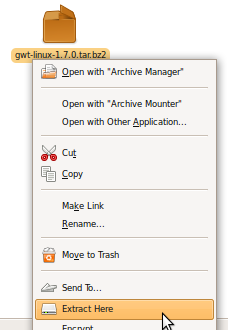
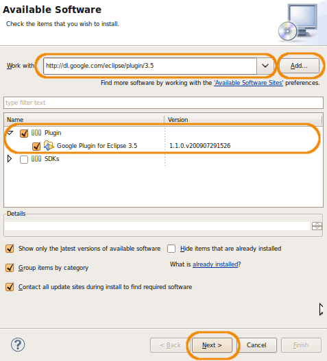

Installation of development environment for service user interface development
This page contains the necessary instruction to complete the development environment with necessary tools for user interface development. It assume that you have already installed a correct development environment, that you have correctly configured JBoss, and that you have correctly installed and deployed a service, using the given Eclipse template. If this is not the case, then you need first to follow the given instruction before proceeding to this page.
Here is the checklist of everything that you will need to install:
- Google Web Toolkit (GWT)
- JBoss Seam
- GWT plugin for Eclipse
- Seam plugin for Eclipse
Step 1: installing Google Web Toolkit (GWT)
Version needed: 1.7.0
GWT is a technology developped by Google for the development of client web interface that connect to server. The interface is developped directly in Java, and a specific compiler is used to convert it to javascript. Also, specific javascript libs are included to ease the communication with the server. The user interface of a service should be implemented in GWT.
To install GWT:
- Download the GWT 1.7.0 archive from the Google site: http://code.google.com/webtoolkit/download.html (You can also download it directly from Google Code, or download a copy directly here). The zip file is about 29 Mb.
- Choose a directory on your hard drive and unzip the GWT archive "gwt-linux-1.7.0.tar.bz2" there. You can remove the archive file after that. 
-
Set up the
GWT_HOMEenvironment variable by adding the following line to your .bashrc file:export GWT_HOME=/<path_to_the_chosen_folder>/gwt-linux-1.7.0 -
Add
GWT_HOMEto your path, by adding the following line to your .bashrc file:export PATH=$PATH:$GWT_HOME
Step 2: installing JBoss Seam
Version needed: 2.1.2.GA
Seam is a technology developped by JBoss for the development of client web interface that connect to server, notably JBoss server. The interface is developed with mixes of JSP, facelets and html, and it include server technology to ease the client-server communications. The Seam technology is used in complement of GWT especially for its server technology: it provide an easy bridge between the GWT client and the EJB on the server. With it, it's easier to access the factory service EJB directly in the GWT client. Be careful about the version number: at the time of this writing, the last version of JBoss Seam is 2.2.0.GA. We don't use this version, because it require JBoss AS 5.1.0, and we're using JBoss AS 5.0.1. We use the Seam version appropriate for JBoss AS 5.0.1, that is Seam 2.1.2.GA.
To install JBoss seam:
- Download the JBoss Seam 2.1.2.GA archive from the JBoss site: http://seamframework.org/Download (You can also download it directly from SourceForge, or download a copy directly here). The zip file is about 136 Mb.
-
Choose a directory on your hard drive and unzip the Seam archive "jboss-seam-2.1.2.zip" there. You can remove the zip file after that.

-
Set up the
SEAM_HOMEenvironment variable by adding the following line to your .bashrc file:export SEAM_HOME=/<path_to_the_chosen_folder>/jboss-seam-2.1.2 -
Add
SEAM_HOMEto your path, by adding the following line to your .bashrc file:export PATH=$PATH:$SEAM_HOME
Step 3: installing GWT plugin for Eclipse
The GWT plugin for Eclipse allows the developer to call the GWT compiler directly from Eclipse, and to create run configurations to launch and debug GWT client. Especially, GWT allows for 2 modes of client running: a "real" mode, where the client is deployed on the server and tested through a real web browser, or a "hosted" mode, where the client is tested directly as java, but still connected to the server. The hosted mode allow for easy debugging of the user interface. With the GWT plugin for eclipse, it is possible to create run configuration to run the client in "hosted" mode, directly from Eclipse.
Installation of an Eclipse plugin is done directly within Eclipse:
-
Go to "Help" -> "Install New Software...":

- Fill the "Work with:" field with the following site URL, and then click the "Add..." button: http://dl.google.com/eclipse/plugin/3.5
- Fill the "Name:" field with the GWT name and click the "OK" button.
- Check all packages to install, and click the "Next >" button: 
- In the install summary, click again the "Next >" button, and in the license panel, accept the license and click on the "Finish button":
Step 4: installing Seam plugin for Eclipse
The Seam plugin for Eclipse allows the developer specific actions and views on seam project.
Installation of an Eclipse plugin is done directly within Eclipse:
-
Go to "Help" -> "Install New Software...":
-
Click on the arrow at the right of the "Work with:" field, and select the JBoss repository (you added it when you added the JBoss plugin):

-
In the "JBoss Tools", check the seam package, and click the "Next >" button:

- In the install summary, click again the "Next >" button, and in the license panel, accept the license and click on the "Finish button":
Once you successfully finished those steps, you're ready to install the Eclipse template to create a factory service user interface.